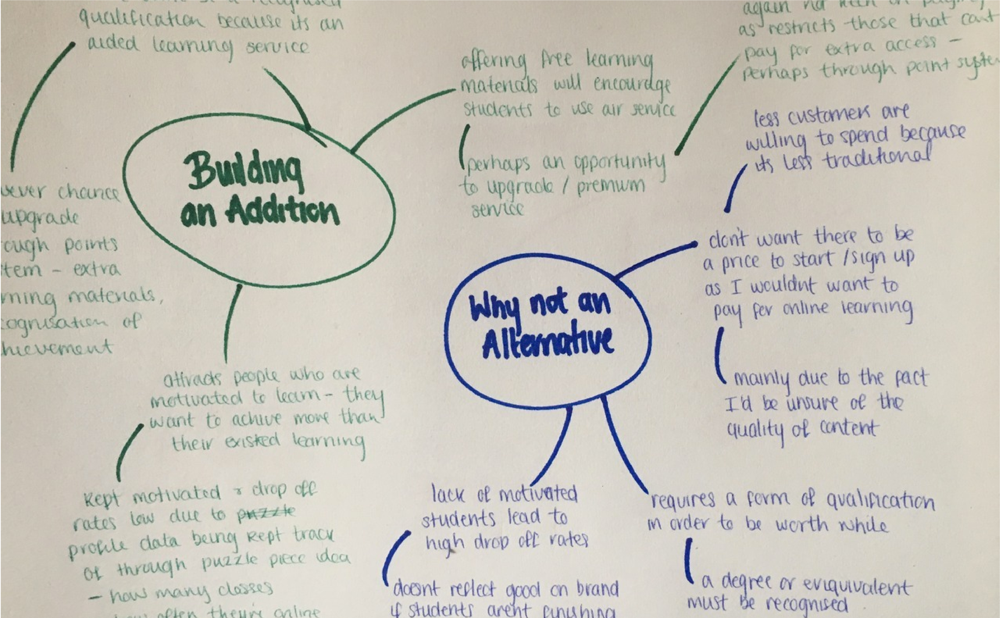
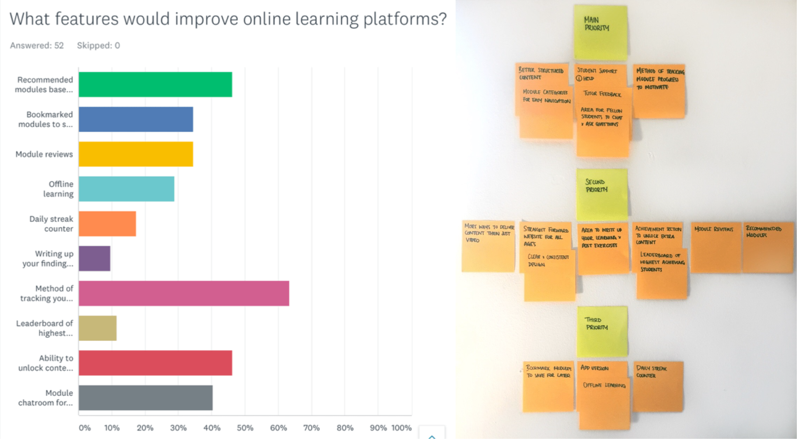
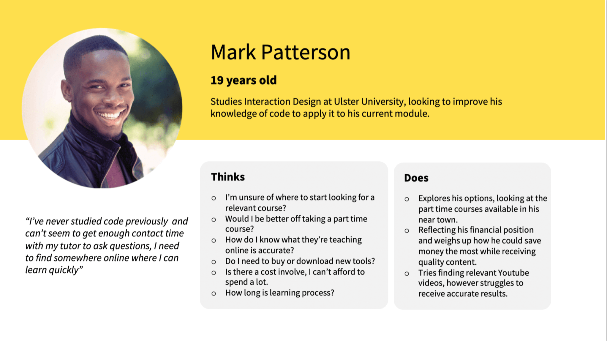
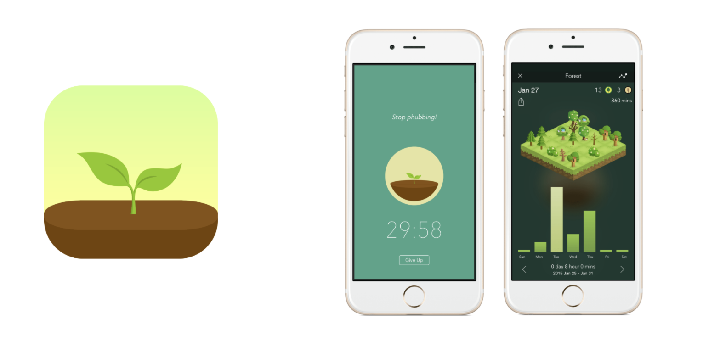
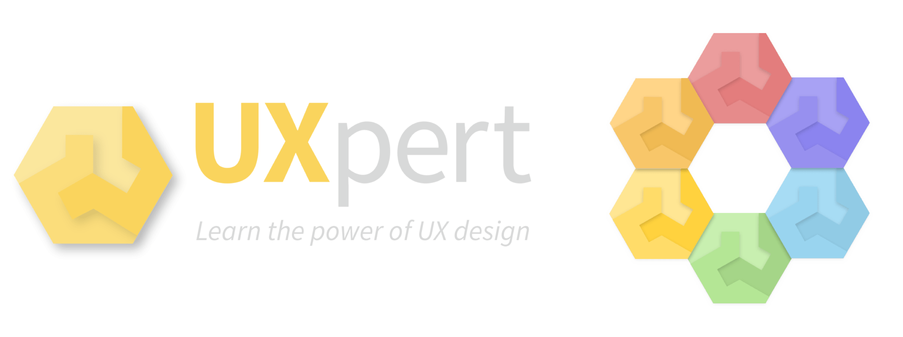
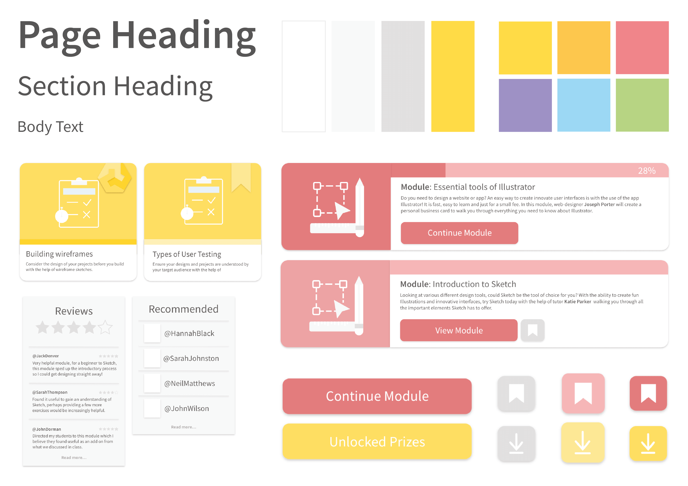
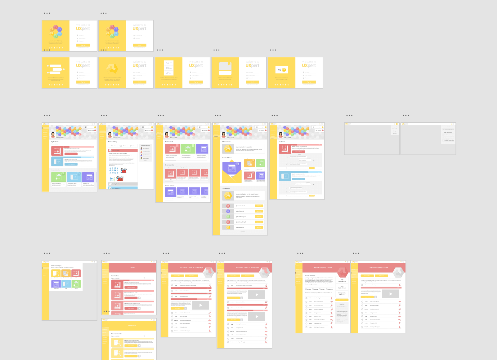

Brief Improving UX education through an online learning platform, moving away from traditional university teaching and looking into potentially the future of education. This project is about gathering extensive research, examining the current educative landscape and visualising how we can improve on what's already existing.
The Monzo of UX education
Monzo is a mobile banking app that has changed the way we bank. There isn't a physical branch, everything you need to access is within an app on your phone. But what sets Monzo's app aside from existing mobile banking apps? Monzo go above and beyond to offer a number of different features provided through great user experience. This includes; transaction notifications, budegting tools, golden ticket invitations, the availablity to freeze your card if you think you have lost it and many more.
I want to be achieving a similar level of innovation and great user experience when it comes to the ideation and design of my own UX school. So the 'Big Hairy Audacious Goal' is to create the Monzo of UX education.
Research Kicked off my research with competitor benchmarking. Looking at Skillshare, Codeacademy, Futurelearn, Udemy, Coursera and many more. Identifying areas of interest perhaps regarding the aesthetics, features or branding. As well as areas that I found confusing or unhelpful as a user of their platform.
Competitor Benchmarking - Current Problems
Content: Often found there was limited course breakdown in terms of what a student would actually be learning. As well as a lack of pathway/structure making it difficult for first time users to understand how they go about learning. Quality Control: Skillshare allow any designers to upload content, and due to low entry barriers it can't guarantee the content provided is of a high standard. This can also make it difficult for student to learn when jumping between different tutors who likely follow different teaching styles, methods and tools. Low Interactivity: Often there was little to no student support, without interactivity for problem solving or feedback your learning is limited. Cost: The cost of learning varied anything from free to £10,000. The more expensive option would perhaps suggest higher quality content however it’s impossible to identify the quality of the course based on solely it’s price. And do all students have that kind of money spare to invest? Certification: Not always a qualification or even an achievement scheme offered. Am I building an alternative to traditional University courses were they would receive a formal degree or am I building an addition to University, a space were students can gain access to further learning. Little sense of Community: Learning online is often learning alone, there isn’t a sense of a classroom. Code Academy offer community forums with the idea that students would talk and ask questions amongst themselves, however this idea often fails when it is a forum of crazy large numbers.
Competitor Benchmarking - Useful features
Strong Branding: FutureLearn and Thinkful focused on brand colour consistency and small iconography, which improves the aesthetics of the overall site - you wouldn’t want to be learning about design from a website that follows bad design. Profile Dashboard: CodeAcademy provide a dashboard for each student to visually keep track of what they are currently learning and have previously learnt. Recommendations: Code Academy provided a questionnaire to students once they sign up so that their recommendations list would be personalised. Downloadable Options: Udemy offer content in the form of videos which can be downloaded for watching offline or at a different time. Add to Wishlist: FutureLearn have an ‘add to wishlist’ option that bookmarks a course you are interested to save for later. Projects: Providing projects for students to carry out after their learning is complete I believe is necessary as design is only really taught by doing. Skillshare encourage you to post your projects in a social media like form receiving likes and comments from other students - a good way of receiving feedback. Gamification: CodeAcademy provide gamification through achievable badges which is a good idea for keeping students intrigued and using their service. Daily Notifications: Duolingo use streaks to encourage students to daily return and learn and therefore achieving goals.

Addition or alternative?
Before my development went any further I needed to decide whether I was building an addition or alternative to traditional university learning. I asked this question in my survey and it was resulted that students were more likely to use an online learning platform along side their university teaching. I was most favourable to building an addition, because I didn't want to put a price on my platform. I couldn’t see a large audience willing to pay for online content, especially as they can't be sure of the quality. I know as a student I’d be reluctant to do the same. Even with platforms that offer free content, there is often the option to upgrade to a premium service at a smaller charge. I think this shuts out those students who can’t afford to receive extra learning materials and therefore stops them from growing their career. Therefore I believe offering free learning materials to all would encourage students to use my service over competitors.
Although there won’t be the opportunity to receive a recognised qualification, I liked the idea of introducing gamification to motivate students when learning online. Something like achieveable badges that unlocks extra content. This way extra content isn't only available to the students who can afford to upgrade but instead the motivated, hard working students that earn their learning.
Online Survey
I set up an survey to find out people's experiences of online learning platforms. Recieving 52 responses, I gained a good understanding of who my users were, how they wanted to use an online learning platform and what features were most favourable.
It was identified that my target audience was mainly school and university students, allowing me to develop 2 main user personas - a student of Interaction Design and a tutor of Interaction Design. Producing user personas provided a straight and narrow for who I'm designing for and how would an online learning platform benefit them.
This survey was most helpful for prioritising the many features I wanted to include in my platform. From the results, I was able to carry out a card sorting exercise to identify the top 3 focal points. These include how might me design better structure content, provide on demand student support and motivate students when learning online.


Process
Adjacent possible: forest
In terms of motivating students when learning online, I found an app called Forest, which really helped me progress my research. Forest helps you to put down your phone and successfully learn, I first heard of Forest from a friend who used the app in school to help her revise for exams. You must stay on the app on order to successfully grow your tree which ultimately stops you from getting distracted by using your phone. After a set amount of time, you will have grown a tree that is then added to your personal forest. This way you can keep working on building your forest while successfully revising.
Online learning can be very distracting when there are so many more interesting things to find on the internet, therefore introducing this concept was very intriguing to me. I came up with a similar idea, using a pattern that can grow as you develop rather than a tree.

Sketching Patterns
Bringing together my ideas on gamification with the help of the app Forest, I started gathering inspiration from various areas including the work of Brendan Dawes' data visualisation, pattern books, and even board games.
I wanted to create a collectable pattern piece, that students would achieve with every module completion. Ideally wanting the piece to connect to one another to produce an overall pattern that would appear on a student's dashboard as a visual reminder to keep learning and achieving more pattern pieces. This concept would address the how might we motivate students when learning online. So I started sketching out different patterns focusing on flat geometric shapes to keep my concept simplsitic and easy to follow.
Developed idea
Showcasing my finalised pattern, colour co-ordinated based on the type of module, every student will build their own unique pattern that is shown on their profile dashboard. In order to build this pattern they must complete modules, with every module completion a new puzzle piece will be added. Similarly to the app Forest, this idea will encourage students to keep working.
I even developed this idea further so that after recieving a certain number of pattern pieces you can begin to unlock hidden content that will boost your learning, this rewards hard workers rather than paying upgraders. With the inclusion of a leaderboard to track students patterns, this would introduce healthy competition again, similar to what you see in a traditional class room, as students work against each other to reach the top of the leaderboard.

User flows and wireframes
Drawing up numerous user flows to understand the structure of my online learning platform and identify how the user would easily navigate through. It was then about sketching wireframes for each individual page, including onboarding screens, dashboard, individual modules, personal blog and more. Focusing on the aesthetic as well as considering the macro and micro-interactions that would occur between and within these pages. I wanted the user to have the best user experience, keeping things simple and easy to follow with some hidden delighters, similar to Monzo's subtle animations. These wireframes were sketched multiple times before reaching the finalised designs. With that vision clear, I was able to mock up an element collage which visualised those common elements such as cards, buttons and text making it easier when building my individual pages.


Outcome The outcome of this design problem is a working prototype of my online learning platform called 'UXpert'. UXpert meets the functional criteria (must teach people about User Experience design) as well as favourable delighters - added value features that improve a user's experience when using my platform such as bookmarks, downloaded content, recommendations and so on. A large aspect of my platform that I believe sets it aside from existing e-learning platforms out there is the motivational pattern concept. A user will collect a pattern piece with every task and module completion encouraging them to continue learning and be the best designer they can be. A prototype is shown below but you can also go check it out for yourself!
Reflections This project taught me the importance of research, especially when building a product in a highly competitive field. As although we can learn to build aesthetically pleasing functional interfaces, it is more important that the product being provided is of added value in order to fit the gap in the market. I learnt many more important stages to add to my design process, such as card sorting, surveys and how might we exercises, that will improve the outcome of future designs.
This project also introduced me to prototyping, previously I had used Invision however for my UXpert platform I chose to look at Adobe XD. Exploring their variety of helpful tools, I especially grew to love the ‘auto animate’ feature. I was opened to the importance of prototyping for the purpose of iteration - work can be easily tested and changed along the developing process before you reach your final designs and therefore smoothing out the building process at the end. One of the most challenging parts of this project was prioiritising all the features I wanted to include as there were many more things I wanted to add however didn't have the time to complete. This mainly included building an app version of UXpert, as well as including a section for up to date UX news, giving students some real life examples, proving the importance of User Experience.
I am pleased with the outcome of UXpert as I believe I have improved on the 3 main problems of existing online learning platforms - providing better structured content, on-demand student support and especially motivating students when learning online. Along with numerous features that would improve a users overall experience. If you'd like to read more about my research and process, check out my research notes!